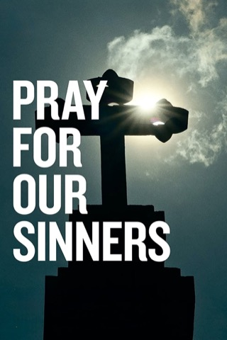

About the film

Director Sinéad O’Shea returns to Navan, the town in Ireland where she grew up, to investigate the overwhelming power of the Catholic church, and the emotional and physical brutality of its methods for dealing with “sinners’ who stray from strictly circumscribed religious and social norms.
O’Shea focuses her lens on the fate of countless women who fell victim to the Catholic church’s system for dealing with young women who became pregnant out of wedlock, and the babies they brought into the world. Through chicanery and especially shame, Navan’s revered local priest routinely spirited pregnant women–most of them teenagers–off to “mother and baby homes,” with the complicity of their parents. There, nuns unleashed a torrent of abuse and punishment that persisted even in the delivery room. In many instances, the nuns and priests lied, telling the new mothers their babies had not survived. Some of the babies were then adopted out to families, while others had, indeed, died, their remains to be discovered only years later.
O’Shea also follows those who resist, including a mother who manages to track down and reclaim her baby, and a couple who offer a safe haven for unmarried women who become pregnant. She finds resistance in a child, a nine-year-old boy, who stands up against corporal punishment in school.
At the festival
- 2022 Saturday, October 15, 2022 · 11:00 AM · Naval Heritage CenterScreening followed by pre-recorded Q&A with director Sinéad O’Shea, moderated by Michael Rezendes of the Associated Press.
More films on these topics
- Short Strand: Minneapolis: On the Record + A Special ScreeningLaura Poitras, Rachel Lauren Mueller, Annie Sundberg2026
 Killing AnnaSam Benstead2026 · 76 min
Killing AnnaSam Benstead2026 · 76 min All the Empty RoomsJoshua Seftel2025 · 33 min
All the Empty RoomsJoshua Seftel2025 · 33 min Fox Chase BoyGerad Argeros, Kaya Moon Dillon2024 · 27 min
Fox Chase BoyGerad Argeros, Kaya Moon Dillon2024 · 27 min All Static & NoiseDavid Novack2023 · 102 min
All Static & NoiseDavid Novack2023 · 102 min 1946: The Mistranslation That Shifted CultureSharon “Rocky” Roggio2023 · 92 min
1946: The Mistranslation That Shifted CultureSharon “Rocky” Roggio2023 · 92 min